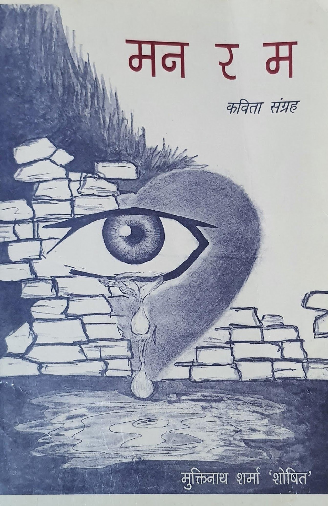
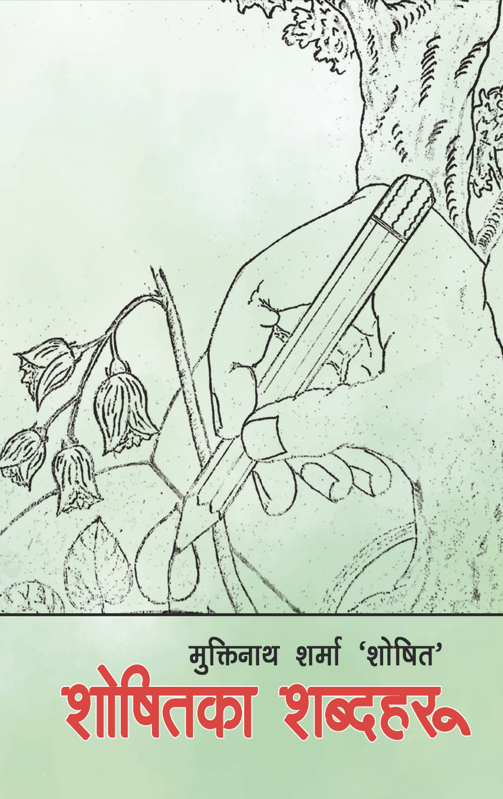

मुक्तिनाथ शर्मा 'शोषित'
कवि ॥ निबन्धकार ॥ कथाकार
Poet · Essayist · Story Writer
कवि · निबन्धकार · कथाकार
दार्जीलिङ पहाडको माटो, पसिना र आत्मसम्मानको आवाज — भारतीय नेपाली साहित्यमा चार दशकभन्दा लामो सृजना-यात्रा।
Voice of the soil, sweat, and dignity of the Darjeeling hills — a creative journey spanning over four decades in Indian Nepali literature.
दार्जीलिंग की पहाड़ियों की मिट्टी, पसीने और आत्मसम्मान की आवाज़ — भारतीय नेपाली साहित्य में चार दशकों से भी अधिक की रचना-यात्रा।
प्रकाशित कृतिहरू

मन र म · २००६ — ५६ कविताहरू · आमा, दशैं, दार्जीलिङ, कर्तव्य…
Man ra Ma · 2006 — 56 poems · mother, Dashain, Darjeeling, duty…
मन र मैं · २००६ — ५६ कविताएँ · माँ, दशैं, दार्जीलिंग, कर्तव्य…

प्रकरण · २०११ — २० निबन्धहरू · विश्वास, भूत, कालो, आँखा र आँसु…
Prakaran · 2011 — 20 essays · faith, ghosts, black, eyes and tears…
प्रकरण · २०११ — २० निबंध · विश्वास, भूत, काला, आँखें और आँसू…

दोछाया · २०२३ — २० कथाहरू · मिरिना, रमा, सिरुपाते, एउटी आमा…
Dochhaya · 2023 — 20 stories · Mirina, Rama, Sirupate, a mother…
दोछाया · २०२३ — २० कहानियाँ · मिरिना, रमा, सिरुपाते, एक माँ…

शोषितका शब्दहरू · २०२५ — ३३ कविताहरू · आमा, बाउ, जिन्दगी…
Shoshitka Shabdaharu · 2025 — 33 poems · mother, father, life…
शोषित के शब्द · २०२५ — ३३ कविताएँ · माँ, बाबा, जिंदगी…

उज्यालो खोज्दै · २०२५ — ५२ मुक्तकहरू · माया, प्रकृति, अस्मिता…
Ujyalo Khojdai · 2025 — 52 muktaks · love, nature, identity…
उज्यालो खोज्दै · २०२५ — ५२ मुक्तक · प्रेम, प्रकृति, अस्मिता…
माटोको कथा लेख्ने कलम
सन् १९६४ मा दार्जीलिङको सुन्तले गाउँमा जन्मिएका मुक्तिनाथ शर्मा 'शोषित' भारतीय नेपाली साहित्यका एक समर्पित साधक हुन्। शिक्षण पेशामा रहँदै उनले कविता, निबन्ध, कथा, गजल र मुक्तक — साहित्यका विविध विधामा निरन्तर कलम चलाएका छन्।
उनका रचनाहरूमा दार्जीलिङ पहाडको जनजीवन, चियाबारीको पसिना, गोर्खा अस्मिताको प्रश्न, प्रकृति-प्रेम र सामाजिक विसङ्गतिप्रतिको तीखो व्यङ्ग्य पाइन्छ। सरल, सरस र इमानदार शैली नै उनका लेखनको पहिचान हो।
A Pen that Writes of Soil
Born in 1964 in the village of Suntale, Darjeeling, Muktinath Sharma 'Shoshit' is a dedicated practitioner of Indian Nepali literature. While working as a teacher, he has continuously written across diverse literary forms — poetry, essays, stories, ghazals, and muktak.
His writing explores the everyday life of the Darjeeling hills, the labour of the tea gardens, questions of Gorkha identity, love of nature, and sharp satire on social injustice. Simple, graceful, and honest — that is the hallmark of his style.
माटी की कथा लिखने वाली कलम
सन् 1964 में दार्जीलिंग के सुन्तले गाँव में जन्मे मुक्तिनाथ शर्मा 'शोषित' भारतीय नेपाली साहित्य के एक समर्पित साधक हैं। शिक्षण पेशे से जुड़े रहते हुए उन्होंने कविता, निबंध, कथा, ग़ज़ल और मुक्तक — साहित्य की विविध विधाओं में निरंतर लेखनी चलाई है।
उनकी रचनाओं में दार्जीलिंग की पहाड़ी जिंदगी, चाय बागानों का पसीना, गोरखा अस्मिता के सवाल, प्रकृति-प्रेम और सामाजिक विसंगतियों पर तीखा व्यंग्य मिलता है। सरल, सरस और ईमानदार शैली ही उनके लेखन की पहचान है।
"कतै वैसाखी टेकेर भए पनि
घस्रिएका हुन्छन्
मस्तिष्कमा शहीद हुन लागेका शब्दहरू
हो, त्यही त कविता हो।"
"Even on crutches if it must —
dragging itself along,
the word on the verge of martyrdom in the mind:
yes, that is what poetry is."
"कहीं बैसाखी के सहारे ही सही —
घसीटते हुए चलते हैं
मन में शहीद होने को आतुर शब्द :
हाँ, वही तो कविता है।"